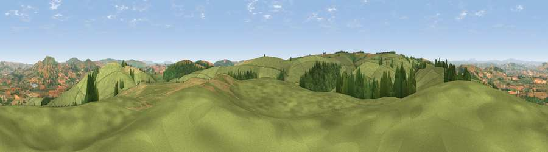

Viewpoint c5788_6522
#5105 in England · top 16% of its area beats it · — · access?Where it is
The exact computed spot (SO 26175 89475). Click the marker for map links.
Public access: no public right of way or access land is recorded at this exact spot — it may be on private land. Computed from Natural England's CRoW access layer and OpenStreetMap rights of way — not the legal definitive map. Always verify locally.
The view, rendered

A 360° render of this exact spot computed from the terrain model, tree cover and land cover — summer colours, afternoon light, calibrated against photographs of famous viewpoints. Real trees, hedges and buildings will differ in detail.
The panorama
Grey silhouette: terrain skyline in each direction (720 bearings, Earth curvature and refraction included). Dashed green: skyline with trees (+15 m) and buildings (+8 m) as obstacles. Blue strip: how far the ground is visible on each bearing.
Where the view opens
Wedge length = distance to the farthest visible ground on that bearing (vegetation-aware). Rings at 10, 25 and 50 km.
What fills the view
73% grassland · 14% cropland · 12% woodland
Angular shares of the visible panorama (visual magnitude), not map area. Landscape diversity 0.34 (0–1 Shannon).
Key numbers
More beautiful places nearby
The staircase of upgrades: each row has a higher view potential than everything closer. Driving times are estimates from straight-line distance, calibrated against real road routing — check an actual route before setting out.
| Place | Direction | Drive | Score |
|---|---|---|---|
| Viewpoint near Bishop's Castle | ENE · 1 km | ~3 min | 75.5 |
| Viewpoint near Lydham | ENE · 9 km | ~17 min | 78.6 |
| Viewpoint near Asterton | E · 13 km | ~24 min | 83.0 |
| Viewpoint near Halfway House | N · 24 km | ~40 min | 83.3 |
| The Lawley | ENE · 25 km | ~40 min | 85.8 |
| Viewpoint near Little Wenlock | ENE · 41 km | ~60 min | 86.6 |
| North Hill | SE · 66 km | ~90 min | 86.8 |
| Worcestershire Beacon | SE · 67 km | ~90 min | 87.1 |
52.49816, -3.08890 · source: screening · position refined by local search. Computed location — check access rights before visiting.